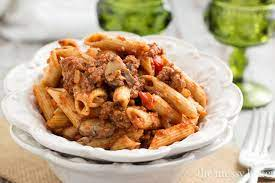

Ragu

Description
Do something different with sausages and transform them into this veg-packed ragu. Great for a family dinner, serve with couscous, mash or pasta
Ingredients
- 2 tbsp olive oil
- 1 carrot, grated
- 3 spring onions, finely chopped
- large handful of mushrooms, finely chopped or grated
- 1 tsp dried oregano
- 1 tsp fennel seeds
- 6 pork sausages, squeezed out of their skins
- 400g can chopped tomatoes
- 1 tbsp tomato ketchup
- mash, pasta or couscous, to serve
Steps
- Heat the oil in a saucepan over a medium heat and tip in the carrot,
spring onions, garlic, mushrooms, oregano and fennel, along with a pinch of salt.
Cook for about 5 mins.
- Add the sausagemeat and cook until browned all over, then add the chopped tomatoes and ketchup,
along with a pinch of salt and 100ml water. Reduce the heat to low, cover and cook until the sauce is thick,
about 20 mins, stirring now and again. Season to taste, then serve with buttery mashed potato, pasta or couscous.